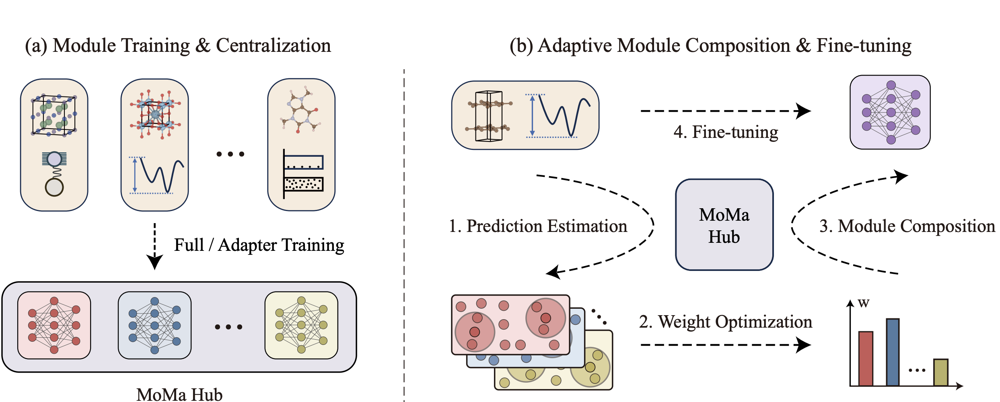
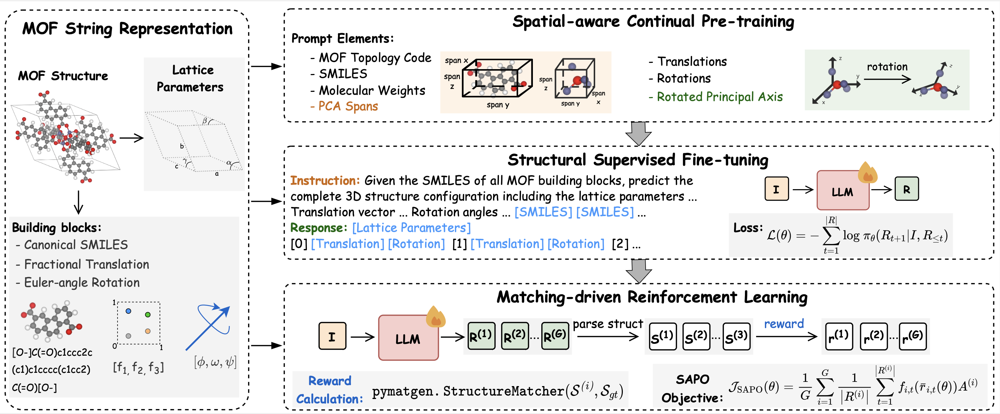
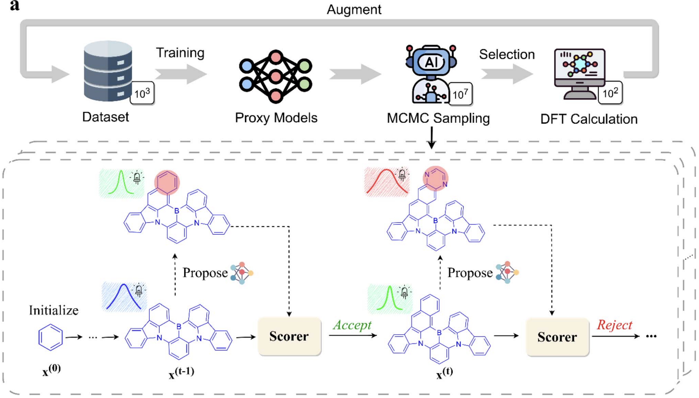

About Me
I am a Ph.D. student at the NLP Lab, Nanjing University, advised by Professor Jianbing Zhang. I received my M.S. from the same group and B.S. from the Kuang Yaming Honors School, Nanjing University. I also worked as a research intern at GenSI Lab in Institute for AI Industry Research (AIR), Tsinghua University, under the supervision of Professor Hao Zhou.
My research interests lie in AI for Science, particularly LLM for science, material representation learning and generative models. Previously, I worked on Vision–Language Models, emphasizing fine-grained cross-modal understanding and evaluation. I like various sports, such as basketball, table tennis, swimming.
Experience
- 2026.7 - present: Intern, Institute of AI Industry Research (AIR), Tsinghua University
- Research focus: LLM agents and LLMs for protein research.
- 2024.9 - present: Ph.D., School of Artificial Intelligence, Nanjing University
- 2024.8 - 2025.11: Intern, Institute of AI Industry Research (AIR), Tsinghua University
- Research focus: AI for Materials Science, especially material representation learning and generative models.
- 2022.9 - 2024.6: M.S., School of Artificial Intelligence, Nanjing University
- Research focus: vision-language pretraining and fine-grained vision-language alignment.
- 2018.9 - 2022.6: B.S., Brain Science and AI, Kuang Yaming Honors School, Nanjing University
Selected Publications

A simple modular learning framework to tackle the diversity and disparity of material property prediction tasks.

An LLM-based metal-organic framework (MOF) structure predictor.

A generative pipeline for inverse design of OLED molecular emitters with application-driven spectral properties, enabling rapid discovery cycles.